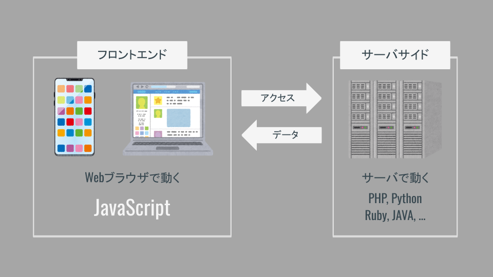
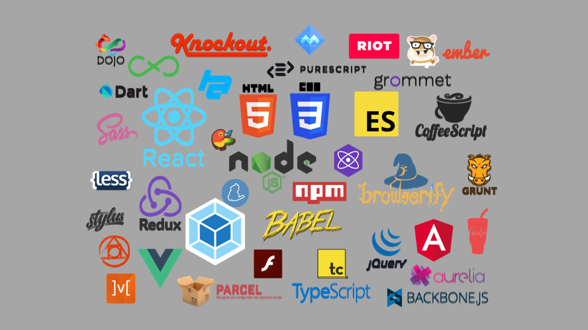
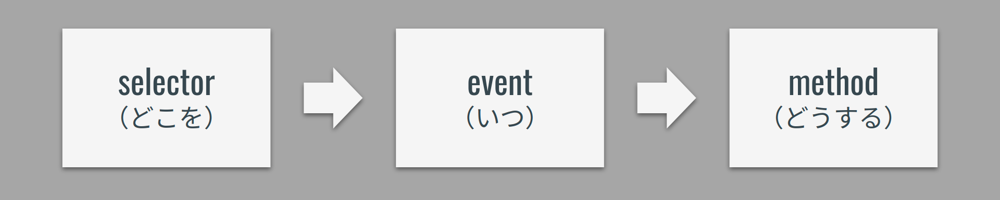

講義資料ノート
サンプルコードはこちら
受講時の注意
時間もお金も投資しているのだからむしり取れるだけむしり取れッ！
講義中に意識するポイント
ただ受けているだけだと資料の内容しかものにできずもったいない！
まず下記は絶対厳守！！！
- うまくいかないときに黙っている「サイレント詰み」は犯罪！
- まずはわからなくても「動くもの」をつくれ！
- 食糧飲料燃料の補給は各自のペースで！（自分にとって最適な状況を用意しろッ！）
いつでもコードを書けるように！
- 授業中は常にエディタを起動！
- 資料も常に開いておこう！
講義中はまず動くものをつくれ！
- 講義では一緒に1つのアプリケーションをつくる．
- わからなくてもとにかく「動かす」．
- 課題に挑戦すると大抵うまくいかない．そのときに「講義でつくった動くもの」と「自分でつくった動かないもの」を比較して何がマズイのか探るんだッ！
聴くときは聴き，書くときは書く！
- 初めて挑戦することなので，わからなくなって当然．．！
- まずはしっかり説明を聴こう！
- 聴くときは聴くこと，手を動かすときは手を動かすことに集中！！
クラスのメンバーでお互いに刺激し合おう！
- 考えたことや感じたことはslackの「ガヤチャンネル」でガンガン発信！
- くだらないことでもOK！！意見を言うやつは偉い！！
- 誰かのコメントに乗っかろう！
疑問を共有しよう！
- 質問はまずslackへ！
- 慣れないうちは「詰んだ」の一言から．詰みを表明することが大切！
- 慣れたら「エラーのスクショ」や「書いたコード」を貼ろう！
- 他の人の質問にも目を通そう！（同じ質問があるかも）
進捗を共有しよう！
- 演習時，できた人はスクショなどslackに貼ってアウトプット！
- できたら「できた」コメント！
- 詰んだら「詰んだ」コメント！
- みなさんのコメントを見ながら講義を進めていきます！
詰みを脱するTips
- まずは打ち間違いを疑おう！
()[]{}'";など
- 書いたら保存しよう！（よく忘れる！）
- Mac:
command + s - Windows:
ctrl + s
- Mac:
- 他の人に見てもらおう！
- 自分の打ち間違いは10分探しても見つからないが，他人の打ち間違いは2秒で見つかる．
- 「隣の人」「slack + スクショ」「zoomのブレイクアウト」を活用するのだッ！
コードに向き合いやすくなる考え方
彼を知り己を知らば百戦危うからず．
質問を制すものはコードを制す！
わからなかったり動かなかったりのときは遠慮なく質問せよ！
下記を記述するとお互いに幸せになれる確率が高まるッ！
- やりたいことは何か
- どういう状態（動き）になればゴールなのか
- どうやったか（考え方や書いたコードなど）
- どうなったか（エラーメッセージやスクショなど）
- 調べたときのググりワード，参考にしたサイトのURL
勿論最初から全部はできないので，まずは遠慮なく投稿するのが大事！
（足りない部分は講師チューターの方々が拾ってくれる）
言語化が大事！
- 「言語化」とは自分のやりたいことやうまくいかない現状を他の人に説明すること．
- 言語化は「できると良い」ではなく「できなければコードが書けない」のである．講師チューターは超能力者ではないので，みなさんが説明しなければ何をしたいのかわからないのだッ．．！
- コードを書くにも「JavaScriptで何を書けばよいのか」「どうなればOKなのか」を自ら決めて明確にすることが第一歩．
- 無理矢理にでも言葉にしたら誰かにぶつけよう．誰かと議論することでより解像度が高まる．最初は「ちょっと何いってるかわからない」と言われるが，やらないと言語化のスキルは高まらない．沈黙は死．
正解を求める思考を捨てよ！
- 「唯一の正解は存在しない」
- 提示されたヒントでは動かないこともあるし，それとは異なる方法でうまくいくこともある．
- 一つのやり方に固執することは地獄への一本道を進むことに似たり．
- 「効率のよいやり方」など一旦動かしてから改めて考えれば良い．力技だろうがまずは動けば良かろうなのだァァッ！！
「コードは量」という勝ちパターン！
- 一発でうまくいくことはほぼない．特にはじめの頃は経験値が少なく「運ゲー」度が高いので，何度もやり直してうまく行くパターンを引かなければならない．
- 運ゲーをものにするには試行回数が必要で，そのためには時間が必要になる．敵の行動パターンを集めながら会心の一撃が出るまで粘れ！
- わからなければ講義内容を10周くらいすれば何か見えてくるはず．わからないと嘆く時間があるならコードを書こう．レベルが足りないなら雑魚敵を狩って経験値を稼ごう．
課題にチャレンジするコツ
課題を制すものは全てを制す．
自分でネタを決めよ！
- 誰かに言われたものをつくっても面白くない．．．
- 自分で「何をつくりあげるのか」を決断してチャレンジすることが大切！
- 「自分で決めたことをやり遂げる」のが最高にCoolッ！
つくりたいものをつくれ！
- 「役に立つ」「ウケそう」ではない．．．
- 「自分がほしい物」「おもしろいと思うもの」にチャレンジすることで身が入る！
- 「誰かに褒められる感覚」よりも「全力でやりきった感覚」ッ！
まず見た目より動きをつくれ！
- プロダクトには「機能」「見た目」どちらも大事！
- 見た目を作り込むことでより「完成度の高いプロダクト」になる．
- しかしまずは「機能」や「動き」をつくる．「見た目」はその後ッ！
- 見た目を先につくると，機能を変更したときに作り直しになる．．．
技術自体を楽しめ！
- 技術は「アイデアを実現するためのツール」．
- しかし技術をより深く知ることで「できることのイメージが広がる」！
- 「好きな技術」「やってて楽しい技術」を見つけよう！まずは技術にのめり込もう！
JavaScript
JavaScriptの役割
| 言語 | 役割 |
|---|---|
| HTML（マスター済み） | コンテンツの指定 タイトル，文章，画像などの記述 |
| CSS（マスター済み） | コンテンツの装飾 色，大きさ，配置などの指定 |
| JavaScript | ユーザー操作，イベント発生による動きを実現 （わりとなんでもできる） |
JavaScriptとは
JavaScript ≠ JAVA
JavaScriptとJAVAの違い
| JavaScript | JAVA |
|---|---|
| フロントエンド言語 | サーバサイド言語 |
| カモミール | カモ |
| オーストラリア | オーストリア |
| ハムスター | ハム |
| メロンパン | メロン |
Webアプリケーションに欠かせないJavaScript

言語別人気ランキング（2020年）
| 言語 | 使用している開発者（%） |
|---|---|
| JavaScript | ||||||||||||||||||||||||||||||||||||||||||||||||||||||||||||||||||||||69.7% |
| HTML/CSS | ||||||||||||||||||||||||||||||||||||||||||||||||||||||||||||||62.4% |
| SQL | |||||||||||||||||||||||||||||||||||||||||||||||||||||||||56.9% |
| Python | ||||||||||||||||||||||||||||||||||||||||||41.6% |
| JAVA | ||||||||||||||||||||||||||||||||||||||38.4% |
| C# | ||||||||||||||||||||||||||||||||32.3% |
| TypeScript | ||||||||||||||||||||||||||||28.3% |
| PHP | ||||||||||||||||||||||||||25.8% |
JavaScript周辺の技術

よく使われる技術
| 技術 | 特徴 |
|---|---|
| - JavaScriptのライブラリ． - ユーザ操作イベントやアニメーションを実現 - ✅ 生JSと比較して短くかける． - ✅ webアプリケーションで広く普及している． - ✅ 導入が簡単． - ✅ 学習コストが低い． - 🔼 難しいことをやろうとすると複雑になる． - まずはここから！ | |
| - JavaScriptのライブラリ． - ✅ モダンなwebアプリケーション（SPA）を実現 - ✅ 高速！ - ✅ TypeScriptでの実装も可能 - ✅ スマホアプリも見据えた開発が可能． - 🔼 学習コスト - 🔼 環境構築がややハードル． - （私はReactが好き） | |
| - サーバサイドでJavaScriptを動かす技術． - ✅ フロントもサーバもJavaScriptで書ける．．！ - ✅ サーバサイドの中では環境構築が容易 - 🔼 難しいことをやろうとすると複雑になる． |
JavaScriptを書く
書き方
<script></script>の間に処理を記述！
書く場所
- htmlファイルの
</body>のすぐ上に書こう！ - ほかにもいくつか書ける場所があります．
- 別にファイルを作るやり方もあります．
まず動かす！！
alert()console.log()
文字列は「
'」か「"」で囲む．どちらでもOK！
<script>
alert('Hello world');
console.log('Hello world');
</script>
JS_おみくじ
本講義の内容とゴール
本講義の内容
- JavaScriptを動かす！
- 変数と条件分岐の練習と実装．
- おみくじアプリケーションの実装．
本講義のゴール
- プログラミングに慣れる！
- 「変数」「条件分岐」を扱う！
- 課題に取り組み始める！
JavaScript
JavaScriptの役割
| 言語 | 役割 |
|---|---|
| HTML（マスター済み） | コンテンツの指定 タイトル，文章，画像などの記述 |
| CSS（マスター済み） | コンテンツの装飾 色，大きさ，配置などの指定 |
| JavaScript | ユーザー操作，イベント発生による動きを実現 （わりとなんでもできる） |
JavaScriptとは
JavaScript ≠ JAVA
JavaScriptとJAVAの違い
| JavaScript | JAVA |
|---|---|
| フロントエンド言語 | サーバサイド言語 |
| カモミール | カモ |
| オーストラリア | オーストリア |
| ハムスター | ハム |
| メロンパン | メロン |
Webアプリケーションに欠かせないJavaScript
言語別人気ランキング（2020年）
| 言語 | 使用している開発者（%） |
|---|---|
| JavaScript | ||||||||||||||||||||||||||||||||||||||||||||||||||||||||||||||||||||||69.7% |
| HTML/CSS | ||||||||||||||||||||||||||||||||||||||||||||||||||||||||||||||62.4% |
| SQL | |||||||||||||||||||||||||||||||||||||||||||||||||||||||||56.9% |
| Python | ||||||||||||||||||||||||||||||||||||||||||41.6% |
| JAVA | ||||||||||||||||||||||||||||||||||||||38.4% |
| C# | ||||||||||||||||||||||||||||||||32.3% |
| TypeScript | ||||||||||||||||||||||||||||28.3% |
| PHP | ||||||||||||||||||||||||||25.8% |
JavaScript周辺の技術
よく使われる技術
| 技術 | 特徴 |
|---|---|
| - JavaScriptのライブラリ． - ユーザ操作イベントやアニメーションを実現 - ✅ 生JSと比較して短くかける． - ✅ webアプリケーションで広く普及している． - ✅ 導入が簡単． - ✅ 学習コストが低い． - 🔼 難しいことをやろうとすると複雑になる． - まずはここから！ | |
| - JavaScriptのライブラリ． - ✅ モダンなwebアプリケーション（SPA）を実現 - ✅ 高速！ - ✅ TypeScriptでの実装も可能 - ✅ スマホアプリも見据えた開発が可能． - 🔼 学習コスト - 🔼 環境構築がややハードル． - （私はReactが好き） | |
| - サーバサイドでJavaScriptを動かす技術． - ✅ フロントもサーバもJavaScriptで書ける．．！ - ✅ サーバサイドの中では環境構築が容易 - 🔼 難しいことをやろうとすると複雑になる． |
JavaScriptを書く
書き方
<script></script>の間に処理を記述！
書く場所
- htmlファイルの
</body>のすぐ上に書こう！ - ほかにもいくつか書ける場所があります．
- 別にファイルを作るやり方もあります．
まず動かす！！
alert()console.log()
文字列は「
'」か「"」で囲む．どちらでもOK！
<script>
alert('Hello world');
console.log('Hello world');
</script>
変数と計算
変数とは
「変数」は文字列や数値に名前をつけて，後から使用できるようにするもの．
プログラミングでは，ある部分で計算などして導出した値を別の部分で使用することが多い．
その際，毎回同じ計算を行うと不便であるため，1回計算した結果に名前をつけておき別の部分でそのまま使えるようにする．
💡 Key Point
変数には自分で名前をつけるが，「何の値なのか」がわかるように名前をつけることが極めて重要！！
変数のルール
プログラミングで使用する値には「数値」「文字列」などの型が存在する．
- 「数値」は数学で扱う数と同様に計算できる．
- 「文字列」は開発者が決めたメッセージやキーワードなどである．英語でも日本語でも扱うことができ，
'（シングルクォーテーション）か"（ダブルクオーテーション）で囲む必要がある． - 変数名の先頭が数字になるパターンはNG！
const number1 = 100;
const number2 = 200;
const text1 = 'hello';
const text2 = 'world';
const 3text = 'JavaScript'; // NG
💡 Key Point
シングルクォーテーションとダブルクオーテーションはどちらでも良いが統一しよう！
数値の計算
数値は数学と同様に四則演算を行うことができる．
const number1 = 1 + 9; // 10
const number2 = 1 - 5; // -4
const number3 = 2 * 4; // 8
const number4 = 10 / 2; // 5
const number5 = 10 % 3; // 1
文字列の結合
文字列は「+」の計算を行うことができる．この場合は数学と異なり，前後の文字列が連結される．
const number1 = 100;
const number2 = 200;
const text1 = 'hello';
const text2 = 'world';
const sum1 = number1 + number2; // 300
const sum2 = text1 + text2; // helloworld
💡 Key Point
1と'1'は異なるッ！
NGワード
変数名には使用できない単語が存在する
構文で使用するもの，将来的に使われるもの，など
- 「
if」「for」など
このような単語は「予約語」と呼ばれる．
- 「MDN javascript 予約語」で検索！！
- 引っかかる場合は少ないので今は気にしなくてOK！
練習
以下の処理をJavaScriptで実装しよう！
- 「
100」と「200」の数値をそれぞれ変数に入れ，加算した結果をalert()で表示． - 「
G's」と「ACADEMY」の文字列をそれぞれ変数に入れ，つなげてalert()で表示． js_practice.htmlに記述しよう！
動作確認
それぞれ「300」と「G'sACADEMY」が表示されればOK！
補足
JavaScriptにおける変数の定義には「
const」「let」「var」の3種類が存在する．基本的には
constを使用し，どうしてもな場合にletを使用すれば良いだろう．const hoge = 100; const hoge = 200; // エラー（同じ名前で定義するのはNG） hoge = 300; // エラー（異なる値を入れ直すのはNG） // 後から上書きできる変数 let fuga = 1000; let fuga = 2000; // エラー（同じ名前で定義するのはNG） foo = 3000; // OK（予期せぬ値が入ってしまう場合があるので注意） // むかしあったやつ（使わないほうが良い） var piyo = 99999; var piyo = 88888; // OK（あぶない） piyo = 77777; // OK（あぶない）
ランダムな数（乱数）をつくる
乱数とは
毎回異なる値が出てくる数のこと（例：1回目に実行したら1，2回目に実行したら4，など）．
JavaScriptには最初から乱数をつくれる処理が用意されている（Math.random()）のでこれを利用する．しかし，この処理は0から1の範囲で小数を発生させるため，Math.floor()を用いて整数に直す．
// 0から1の間でランダムな値（乱数）を表示．
const randomNumber1 = Math.random();
alert(randomNumber1);
// 0から4までのどれかが表示される！
const randomNumber2 = Math.floor(Math.random() * 5);
alert(randomNumber2);
💡 Key Point
乱数の処理は毎回これでいけるので，覚えるよりコピペ！
補足
JavaScriptのMath.~には多くの種類があり，絶対値を求めたり四捨五入したりする処理も存在する．
練習
math.htmlで以下の数をランダムに発生させてalert();で表示させよう！
| 最小値 | 最大値 | |
|---|---|---|
| 問題1 | 0 | 9 |
| 問題2 | 1 | 9 |
| 問題3 | 5 | 10 |
| 問題4 | 50 | 99 |
条件分岐
条件分岐
条件を満たすときと満たさないときで別々の処理を実行する！
if(`条件式`){
// 条件式を満たす場合の処理
} else {
// 条件式を満たさない場合の処理
}
複数の条件で処理を分岐させることもできる！
if(`条件式1`){
// 条件式1を満たす場合の処理
} else if(`条件式2`) {
// 条件式1と満たさなくて条件式2を満たす場合の処理
} else {
// いずれの条件も満たさない場合の処理
}
条件式
条件式は左辺と右辺の比較で行うことが多い（比較演算子）．
| 演算子 | 意味 | 補足 |
|---|---|---|
== | 左辺と右辺が等しい | 1と'1'は等しいと判定される． |
=== | 左辺と右辺が等しい | 1と'1'は等しくないと判定される． |
!= | 左辺と右辺が等しくない | 1と'1'は等しいと判定される． |
!== | 左辺と右辺が等しくない | 1と'1'は等しくないと判定される． |
> | 左辺が右辺より大きい | |
< | 左辺が右辺より小さい | |
>= | 左辺が右辺以上 | |
<= | 左辺が右辺以下 |
💡 Key Point
左辺と右辺が等しい場合に
a = bのように記述してハマる．a == bが正解．
条件式の組み合わせ
条件式は複数組み合わせることができる．下記2種類がよく使われる．
- 複数の条件式を全て満たす場合（AND条件）は条件式を
&&でつなぐ． - 複数の条件式のいずれかを満たす場合（OR条件）は条件式を
||でつなぐ．
if(`条件式1` && `条件式2`){
// 条件式1と条件式2を両方満たす場合の処理
} else {
// 片方しか満たさない，両方満たさない場合の処理
}
if(`条件式1` || `条件式2`){
// 条件式1か条件式2のどちらかを満たす場合の処理
} else {
// 両方満たさない場合の処理
}
💡 Key Point
条件分岐を書くときははじめに構文（
if(){}else{}）をつくってから条件や処理を書く！
練習
乱数と条件分岐を組み合わせておみくじを実装！
ランダムに「大吉・中吉・小吉・凶・大凶」をalert()で表示！
omikuji01.htmlに記述しよう！
ヒント！！
Math.rondom()で0から4を発生させる．（<- 前項でつくったものが使える．．！）- 出た数値に応じて
if文を使って条件分岐し，異なる内容をalert()で出力！
毎回ランダムで「大吉・中吉・小吉・凶・大凶」のどれかが表示されればOK！
おみくじのWebアプリ実装
おみくじの処理自体はできたが，画面から操作できるWebアプリケーションにしたい！
想定される挙動
- 画面上のHTML要素（DOM）をクリックして処理を実行！
- 要素を「指定」する！
- classやidでDOMを特定する．
- 指定したDOMに対してJavaScriptで操作を行う！
例
- 「
idがbutton」の要素を「クリック」したら．．． - 「大吉-大凶のどれかをランダムに表示」！
参考（DOM）
HTMLに記述されている各要素のこと（document object model）
基本の3要素
- selector（どこを）
- event（いつ）
- method（どうする）

なんだけど．．．
＿人人人人人人人人人人人人人人＿
＞ JavaScriptはDOM操作が苦手 ＜
￣Y^Y^Y^Y^Y^Y^Y^Y^Y^Y^Y^Y^Y^Y^￣
jQueryライブラリ
jQueryとは
- セレクタをcssと同じ要領で指定できる．
- 素のJavaScriptよりも短く書ける！
- アニメーションなど手軽に設定できる．
- 書き方（順序や考え方）はJavaScriptと同様！
- 導入が簡単（フレームワークなどは環境構築で詰む）
【参考】https://webkikaku.co.jp/homepage/blog/hpseisaku/webdesign/jquery_start/
💡 Key Point
jQueryはJavaScriptのDOM操作を短縮して書けるライブラリ
補足
ライブラリは他の開発者がつくったコードを利用させてもらうイメージ．手間のかかる処理を一発で書けるように実装してくれている．
ライブラリ読み込み
（jQueryに限らず）ライブラリはソースコードの読み込みが必要！！
（読み込みのコードは毎回同じなのでコピペでOK！）
<!-- 🔽 ここで読み込み 🔽 -->
<script src="https://ajax.googleapis.com/ajax/libs/jquery/3.6.0/jquery.min.js"></script>
<script>
// 自分で書いた処理
</script>
💡 Key Point
ライブラリを使用する場合は「自分で書くJavaScriptより上の行で」読み込むこと．ライブラリで決められた関数を実行しようとして，読み込みが終わっていない状態だとエラーになってしまう．
jQueryの書き方と動き方
基本の考え方はJavaScriptと全く同じッ！
コード例
idがbuttonの要素を- クリックしたときに
- アラートを出す
$('#button').on('click', function () {
alert('Hello World!');
});
コード内でそれぞれ以下の場所で指定している．
$(`セレクタ名`).on(`イベント名`, function () {
`実行したい処理（メソッド）`
});
今回はidで指定しているが，セレクタの指定方法はたくさんある．イベントもたくさんある．
- 「
jQuery セレクタ」でググる！ - 「
jQuery イベント」でググる！
まずは形の入力に慣れよう！
いろいろな処理を書く前に，形の入力に慣れることが大事！！（慣れないとしょうもないスペルミスで時間溶かす）
$('#id').on('click', function () {
// ...
});
喋りながら書くと定着する（本当）
だらーあいでぃーおんくりっくふぁんくしょんかっこかっこなみかっこえんたー...
練習
おみくじアプリケーションを完成させよう！
仕様
- 「おみくじを引くボタン」をクリックしたら以下のどれかを画面に表示！
- 「大吉・中吉・小吉・凶・大凶」
ヒント
下記の流れで考えよう！
- ボタンをクリックしたらなにかする．
- ランダムな数値を発生させる．
- 条件分岐をつくって，対応する「大吉，中吉，...」を画面に表示させる．
$('#button').on('click', function () {
// 0から4でランダムな数を作成
// 0だったら大吉，1だったら中吉．．．
// 結果をidで指定した場所に表示
});
課題
じゃんけんアプリを実装！！！！！
じゃんけんアプリの仕様
- 「グー」「チョキ」「パー」のボタンを設置
- どれかをクリックしたら「コンピュータの出した手は？」を変更
- 「コンピュータ：グー」「コンピュータ：チョキ」など
- 「結果は？」の箇所に
- 「あなたの負け」「あなたの勝ち」「あいこ」のどれかを表示！
※上記を最低ラインとして製作
※これを土台にしてガンガン発展させよう！！
課題に対する考え方
| ✅ | ❎ |
|---|---|
| オリジナリティを表現する | 誰かに言われたものを作る |
| プロダクトを創る | プログラムを書く |
| 自分が好きなものをつくる | 受けが良さそうなものをつくる |